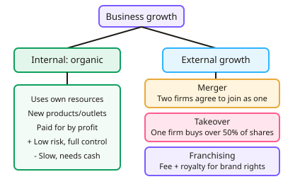

GCSE Business · Topic 8
Growing the Business and Global Markets
This topic looks at how businesses grow, and what happens when they start trading around the world.
We compare organic and external growth, economies and diseconomies of scale, globalisation and multinationals.
Finally we consider ethics and the environment, and the trade off between profit and doing the right thing.
- 4 subtopics
- 193 questions
- Free: 8.1 notes and 10 questions
In this topic
- 8.1Methods of growth: organic growth, mergers, takeovers and franchisingFree below · 40 questions
- 8.2Growth in practice: economies and diseconomies of scale, problems of growth, and changing aims and ownershipOpen in Full Marks · 34 questions
- 8.3Globalisation, imports and exports, and multinational businesses: opportunities, threats and trading blocsOpen in Full Marks · 79 questions
- 8.4Ethical and environmental considerations: sustainability, pressure groups and the trade-off between profit and responsible behaviourOpen in Full Marks · 40 questions
8.1 · Free notes
Methods of growth: organic growth, mergers, takeovers and franchising

Key points
- Organic growth (internal growth) means expanding using the firm's own resources, e.g. selling more, launching new products or opening new outlets. It is usually funded by retained profit.
- Organic growth: advantages are lower risk, the owners keep control and the culture is preserved. Disadvantages are that it is slow, limited by available finance and market size, and rivals may grow faster.
- A merger is when two businesses agree to join to form one new business. The firms are often similar in size and the owners of both usually share ownership.
- A takeover (acquisition) is when one business buys a controlling stake (over 50% of the shares) in another. It can be friendly or hostile. Example: Kraft's takeover of Cadbury in 2010.
- Types of integration: horizontal (same industry, same stage, e.g. two supermarkets), vertical backward (buying a supplier), vertical forward (buying a distributor or retailer) and conglomerate (unrelated industries).
- Benefits of mergers and takeovers: quick growth, bigger market share, economies of scale, removing a competitor, gaining new brands or markets and spreading risk. Drawbacks: high cost, culture clash, job losses, integration problems and possible diseconomies of scale.
- The Competition and Markets Authority (CMA) can investigate a merger or takeover that might create a monopoly or reduce competition. This is a possible external constraint on growth.
- Franchising: the franchisor sells the right to use its brand, products and business model to a franchisee. The franchisee pays an initial fee plus ongoing royalties (a % of sales). Examples: McDonald's, Subway, Domino's.
- Franchisor advantages: rapid expansion using the franchisee's capital, a motivated owner-manager and a steady fee income. Disadvantages: less control over quality, profits are shared and one poor outlet can damage the brand.
- Franchisee advantages: a proven brand, training and support, and lower risk of failure. Disadvantages: fees and royalties reduce profit, there is little freedom, rules must be followed and start-up costs can be high.
- Exam tip: match the method to the context and justify it. A small firm wanting low risk and control suits organic growth. A large firm wanting fast entry to a new market suits a takeover. A brand wanting fast expansion with little capital suits franchising.
In more detail
- Takeover example: Facebook (now Meta) bought Instagram in 2012 for about $1 billion, gaining a fast-growing app and its users.
- Forward vs backward: a brewery buying a chain of pubs is forward vertical integration, while buying a hop farm is backward vertical integration.
- Organic growth example: a coffee shop opening a second branch with its own profits keeps full control, but growth is slow.
- Worked royalty: a franchisee paying a 6% royalty on sales of £400,000 pays the franchisor £24,000 a year.
Practice
Methods of growth: organic growth, mergers, takeovers and franchising: 10 questions
Pick an answer to check it, or open the answer for the explanation.
1. What best distinguishes a takeover from a merger?
- In a takeover, one firm buys control of another's shares
- A merger always involves a franchisor
- In a takeover, both firms agree to form a new business
- A takeover only happens between firms of different sizes
Show answer
A: In a takeover, one firm buys control of another's shares. In a takeover one firm buys a controlling stake in another and gains control. A merger is two firms agreeing to join together as one.
2. A franchisee pays the franchisor a percentage of its sales each year. What is this payment called?
- Dividend
- Royalty
- Interest
- Retained profit
Show answer
B: Royalty. A royalty is the ongoing percentage of sales paid to the franchisor for using its brand. A dividend is a share of profit paid to shareholders.
3. A bakery chain buys the flour mill that supplies it. This is an example of:
- Horizontal integration
- Backward vertical integration
- Forward vertical integration
- Organic growth
Show answer
B: Backward vertical integration. Buying a supplier moves the firm back along the supply chain, so it is backward vertical integration. It is also an external method of growth, not organic.
4. A supermarket chain buys another supermarket chain. This is:
- Franchising
- Backward vertical integration
- Conglomerate integration
- Horizontal integration
Show answer
D: Horizontal integration. Both firms are in the same industry and at the same stage of production, so it is horizontal integration.
5. Which is a disadvantage of organic growth?
- It is usually slow because it relies on the firm's own resources
- It involves a high risk of culture clash
- It requires paying royalties
- It reduces the owners' control
Show answer
A: It is usually slow because it relies on the firm's own resources. Organic growth is limited by the firm's own finance and sales, so it is slow. Culture clash and loss of control are more linked to mergers and takeovers.
6. A franchisee pays a £20,000 initial fee plus 6% of sales as royalty. Sales in year 1 are £150,000. How much is paid to the franchisor in year 1?
- £29,000
- £20,000
- £9,000
- £170,000
Show answer
A: £29,000. Royalty = 6% × £150,000 = £9,000. Add the £20,000 initial fee: £20,000 + £9,000 = £29,000.
7. Which is a benefit to a franchisor of expanding by franchising?
- It expands quickly using the franchisee's capital
- It has complete control over how every outlet is run
- It keeps all the profit from each outlet
- It avoids paying any taxes
Show answer
A: It expands quickly using the franchisee's capital. Franchisees invest their own money to open outlets, so the franchisor expands quickly with little capital. It shares profit and has less control.
8. Firm A buys 55% of the shares in Firm B. This is best described as a:
- Organic expansion
- Merger
- Takeover
- Franchise agreement
Show answer
C: Takeover. Owning over 50% of the shares gives control, so this is a takeover (acquisition). A merger is a mutual agreement to join.
9. Which is a likely problem after two firms merge?
- The firms no longer need any finance
- Clashing company cultures between the two workforces
- Complete loss of the brand names
- A guaranteed fall in unit costs
Show answer
B: Clashing company cultures between the two workforces. Different ways of working and values often cause culture clash after a merger. Cost savings are possible but not guaranteed.
10. Which statement about franchising is correct?
- A franchisee runs its own outlet but uses the franchisor's brand and pays fees
- Franchising means two firms form a new combined company
- A franchisee keeps all profits and pays no fees
- A franchisor employs the staff in every franchised outlet
Show answer
A: A franchisee runs its own outlet but uses the franchisor's brand and pays fees. The franchisee operates the outlet using the franchisor's brand and system, in return for an initial fee and royalties.
Keep going in Full Marks
Full Marks has 40 questions on Methods of growth: organic growth, mergers, takeovers and franchising (30 more than here), set out in practice levels. You also get notes and 3D models for all 4 subtopics of Growing the Business and Global Markets, plus games, timed exams and past papers.